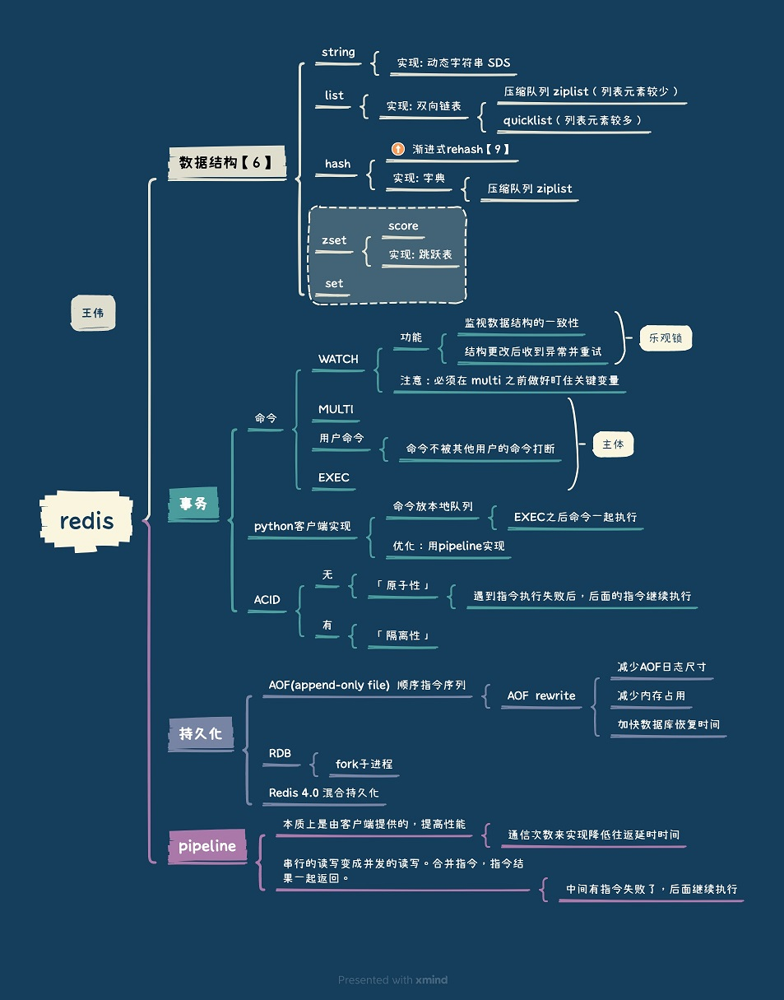

事务 #
| - | 原子性 | 一致性 | 隔离性 | 持久性 |
|---|---|---|---|---|
| redis | 一定的原子性，但不支持回滚 | × | √ | 通过一定策略可以保证持久性 |
| redis | 没有进行回滚，不具备原子性. 操作之后写AOF日志 |
aof可以保证，但从应用层看没有回滚和原子性，所以并不能保证一致性 | 单线程天然隔离 | 纯内存(×) RDB Bgsave(√) RDB 异步执行(×) |
| mysql | √ | √ | √ | √ |
| mysql | undo log | 锁 | 锁 | redo log |
hash命令 #
-
redis hash的结构：一维数组+二维链表（和java的hashmap结构一样）
-
redis rehash: 渐进式rehash Java rehash： 一次性将旧数组下挂接的元素全部转移到新数组下面
IO模型和性能 #
-
非阻塞IO： read， write时不阻塞
-
事件轮询和多路复用[8]
-
redis性能 最低配置: 4GB， 2核， 链接数2w， QPS 16w
-
redis性能高的原因
- 高效的数据结构
- 多路复用IO模型
- 事件机制 总结:Reactor + 队列 [10]
大体上可以说 Redis 的工作模式是，reactor 模式配合一个队列，用一个 serverAccept 线程来处理建立请求的链接， 并且通过 IO 多路复用模型，让内核来监听这些 socket，一旦某些 socket 的读写事件准备就绪后就对应的事件压入队列中， 然后 worker 工作，由文件事件分派器从中获取事件交于对应的处理器去执行，当某个事件执行完成后文件事件分派器才会从队列中获取下一个事件进行处理。 可以类比在 netty 中，我们一般会设置 bossGroup 和 workerGroup 默认情况下 bossGroup 为 1，workerGroup = 2 * cpu 数量， 这样可以由多个线程来处理读写就绪的事件，但是其中不能有比较耗时的操作如果有的话需要将其放入线程池中，不然会降低其吐吞量。 在 Redis 中我们可以看做这二者的值都是 1。
特性 #
- Redis 2.6 lua, pubsub, Sentinel V1
- Redis 2.8
Sentinel V2, ipv6 - Redis 3.0 Redis Cluster
- Redis3.2 GEO
- Redis 4.0 psync2.0, lazy-free, modules RDB-AOF 混合持久化
- Redis 5.0 Stream
- Redis 6.0 Thread I/O SSL, ACL
- Redis 7.0
functions, ACL v2 sharded-pubsub client-eviction multi-part AOF
参考 #
《Redis 深度历险：核心原理与应用实践》 钱文品
- 原理 4：雷厉风行 —— 管道
- 原理 5：同舟共济 —— 事务
- 原理 3：未雨绸缪 —— 持久化
- 鞭辟入里 ——— 线程IO模型
- 《Redis实战》 黄健宏 3.7 ,4.4, 6.2
- Redis 数据结构和对象系统，记住这 12 张图就够啦！
- 七问Redis，才知道我与技术大牛的差距在哪里 *** 事务，乐观锁watch，持久化， 内存优化，主从复制，过期删除策略
- Mysql事务总结 self
- 美团针对Redis Rehash机制的探索和实践 ***
- 为什么 Redis 单线程能达到百万+QPS？ ***